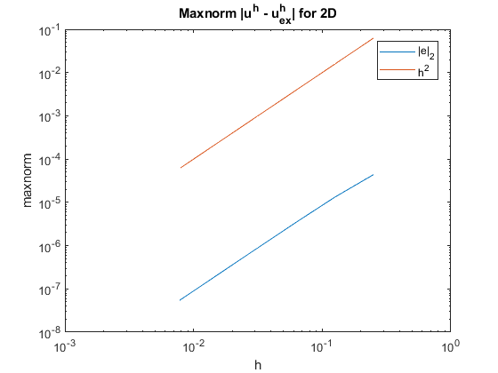
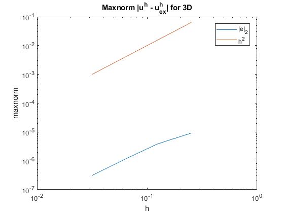
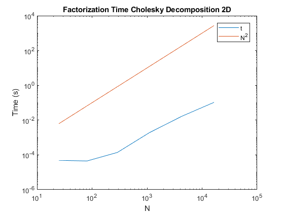
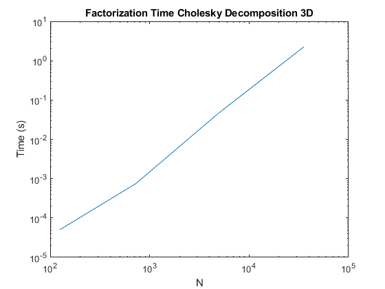
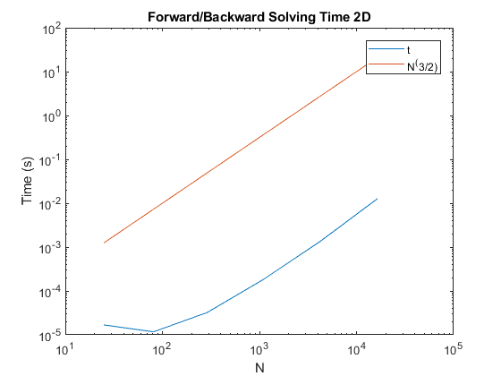
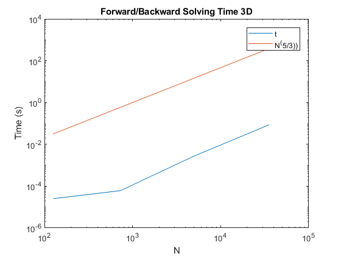
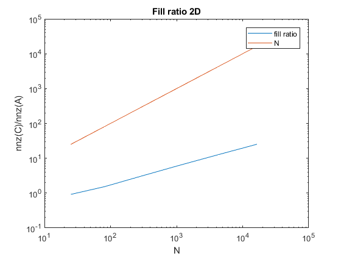
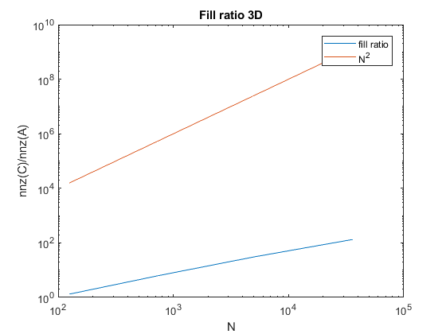
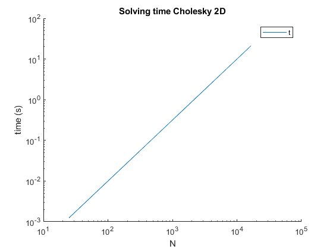
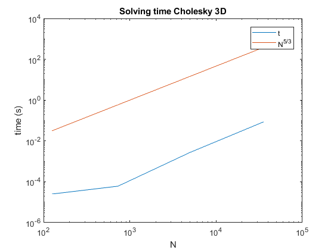

Contents
Check order of convergence for
clear;
close all;
solver = 'Cholesky';
m_max = 100;
p2 = 2:1:7;
n2 = 2.^p2;
N2 = (n2+ones(size(n2))).^2;
h2 = 1./n2;
err2D = ones(size(p2));
tF2 = ones(size(p2));
tS2 = ones(size(p2));
fill_ratio2 = ones(size(p2));
resid2 = ones(size(p2,1),m_max);
rrf2 = ones(size(p2,1),5);
for p = p2
p
[u2, u_ex2, err2D(p-1),tF2(p-1),tS2(p-1), fill_ratio2(p-1),resid2(p-1,:),rrf2(p-1,:),M2(p-1)] = SolveProblem(p,2,3,solver,0,m_max);
end
p3 = 2:1:5;
n3 = 2.^p3;
N3 = (n3 + ones(size(n3))).^3;
h3 = 1./n3;
err3D = ones(size(p3));
tF3 = ones(size(p3));
tS3 = ones(size(p3));
fill_ratio3 = ones(size(p3));
resid3 = ones(size(p3,1),m_max);
rrf3 = ones(size(p3,1),5);
for p= p3
p
[u3, u_ex3, err3D(p-1),tF3(p-1),tS3(p-1),fill_ratio3(p-1), resid3(p-1,:),rrf3(p-1,:),M3(p-1)] = SolveProblem(p,3,3,solver,0,m_max);
end
p =
2
p =
3
p =
4
p =
5
p =
6
p =
7
p =
2
p =
3
p =
4
p =
5
if strcmp(solver,'Cholesky')
figure;
plot(h2,err2D);
title('Maxnorm |u^h - u^h_{ex}| for 2D')
xlabel('h')
ylabel('maxnorm')
set(gca, 'XScale','log')
set(gca, 'YScale', 'log')
hold on;
plot(h2, h2.^2);
legend('|e|_2','h^2')
hold off;
figure;
set(gca, 'YScale', 'log')
plot(h3,err3D);
title('Maxnorm |u^h - u^h_{ex}| for 3D')
xlabel('h')
ylabel('maxnorm')
set(gca, 'XScale','log')
set(gca, 'YScale', 'log')
hold on;
plot(h3, h3.^2);
legend('|e|_2','h^2')
hold off;
 
Factorization and solving time as function of problem size
figure;
plot(N2,tF2)
title('Factorization Time Cholesky Decomposition 2D')
xlabel('N')
ylabel('Time (s)')
set(gca, 'XScale','log')
set(gca, 'YScale', 'log')
hold on;
plot(N2, 10^-5*N2.^2);
legend('t','N^2')
hold off;
figure;
plot(N3,tF3)
title('Factorization Time Cholesky Decomposition 3D')
xlabel('N')
ylabel('Time (s)')
set(gca, 'XScale','log')
set(gca, 'YScale', 'log')
figure;
plot(N2,tS2)
title('Forward/Backward Solving Time 2D')
xlabel('N')
ylabel('Time (s)')
set(gca, 'XScale','log')
set(gca, 'YScale', 'log')
hold on;
plot(N2, 10^-5*N2.^(3/2));
legend('t','N^(3/2)')
hold off;
figure;
plot(N3,tS3)
title('Forward/Backward Solving Time 3D')
xlabel('N')
ylabel('Time (s)')
set(gca, 'XScale','log')
set(gca, 'YScale', 'log')
hold on;
plot(N3, 10^-5*N3.^(5/3));
legend('t','N^(5/3))')
hold off;
   
Fill ratio analysis
figure;
plot(N2,fill_ratio2)
title('Fill ratio 2D')
xlabel('N')
ylabel('nnz(C)/nnz(A)')
set(gca, 'XScale','log')
set(gca, 'YScale','log')
hold on
plot(N2,N2);
legend('fill ratio','N')
hold off
figure;
plot(N3,fill_ratio3)
title('Fill ratio 3D')
xlabel('N')
ylabel('nnz(C)/nnz(A)')
set(gca, 'XScale','log')
set(gca, 'YScale','log')
hold on
plot(N3,N3.^2);
legend('fill ratio','N^2')
hold off
 
end
figure;
title(['Solving time ',solver,' 2D'])
xlabel('N')
ylabel('time (s)')
set(gca, 'XScale','log')
set(gca, 'YScale', 'log')
hold on;
if strcmp(solver,'Cholesky')
plot(N2,10^-5*N2.^(3/2));
legend('t','N^{3/2}')
elseif strcmp(solver, 'SSOR')
plot(N2,10^-5*N2.*M2)
legend('t','N*N_{iter}')
elseif strcmp(solver,'PCG')
plot(N2,10^-5*N2.^(3/2).*M2);
legend('t','N^{3/2}*N_{iter}')
end
hold off;
figure;
plot(N3,tS3);
title(['Solving time ',solver,' 3D'])
xlabel('N')
ylabel('time (s)')
set(gca, 'XScale','log')
set(gca, 'YScale', 'log')
hold on;
if strcmp(solver,'Cholesky')
plot(N3,10^-5*N3.^(5/3));
legend('t','N^{5/3}')
elseif strcmp(solver, 'SSOR')
plot(N3,10^-5*N3.*M3);
legend('t','N*N_{iter}')
elseif strcmp(solver,'PCG')
plot(N3,10^-5*N3.^(5/3).*M3);
legend('t','N^{5/3}*N_{iter}')
end
hold off;
Warning: Ignoring extra legend
entries.
 
Plot relative residuals SSOR
if strcmp(solver,'SSOR') || strcmp(solver,'PCG')
figure;
plot(resid2');
set(gca, 'YScale', 'log')
title(['Relative residual ||r||_2/||f||_2', solver,' 2D'])
for i=1:length(n2)
legendn{i} = sprintf('n=%s',num2str(n2(i)));
end
legend(legendn,'Location','best')
xlabel('m')
ylabel('||r||_2/||f||_2')
figure;
plot(resid3');
set(gca, 'YScale', 'log')
title(['Relative residual ||r||_2/||f||_2 ' ,solver,' 3D'])
for i=1:length(n3)
legendn{i} = sprintf('n=%s',num2str(n3(i)));
end
legend(legendn,'Location','best')
xlabel('m')
ylabel('||r||_2/||f||_2')
end